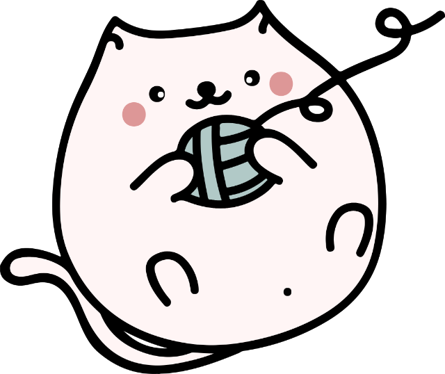

Spin the wheel. Write a story!
Looking it up…
This wheel is made for adjectives like “scary” and verbs like “stomped.” Try a word that describes it or tells what it does!
What should you write next?
While you're on good Wi-Fi, paste the words you expect students to use (commas or new lines between them), then tap Download. Words from the built-in word book don't need it.